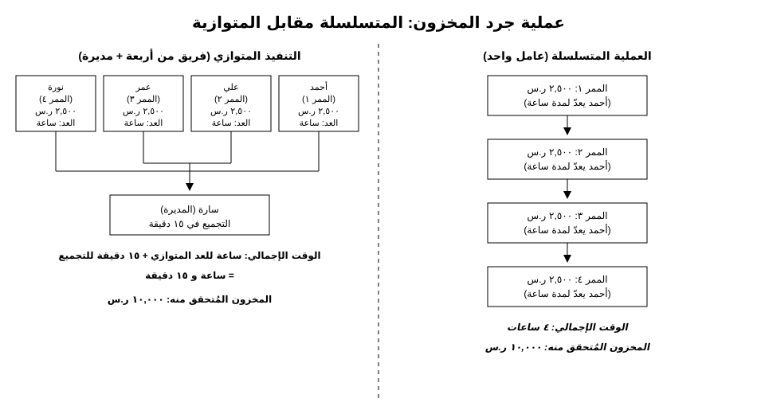
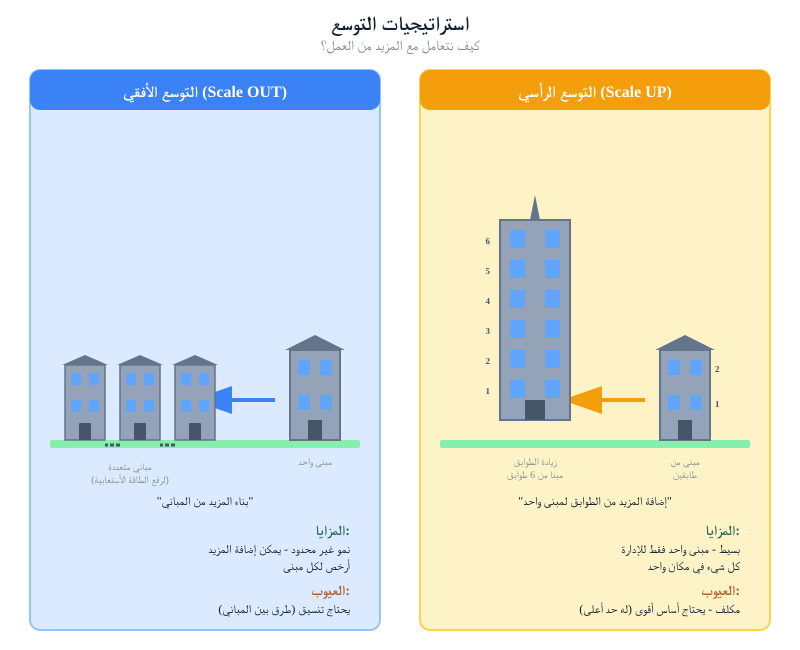
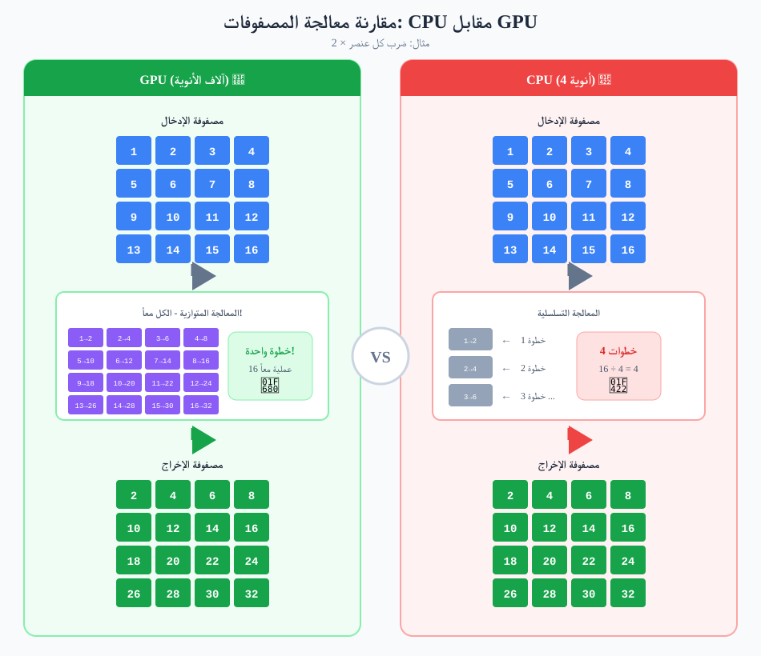
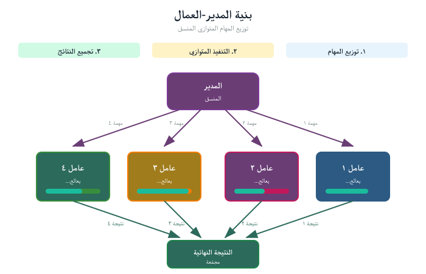
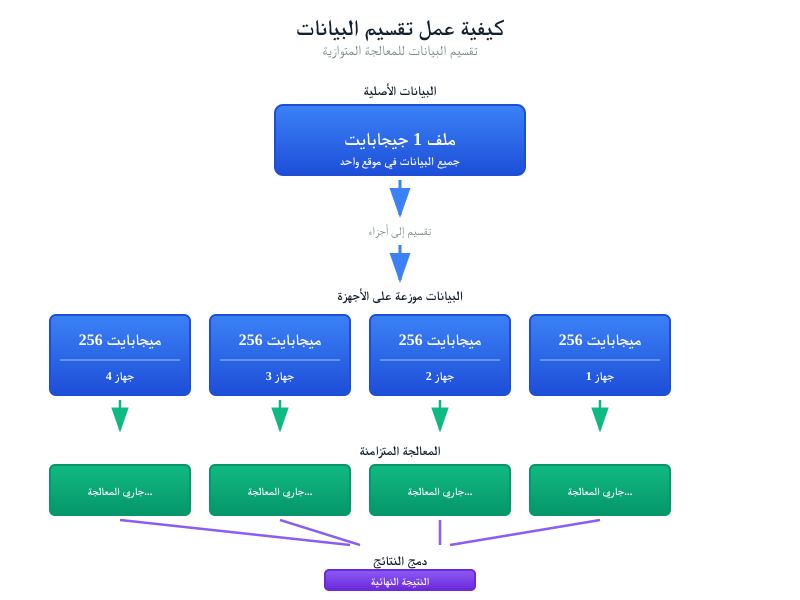
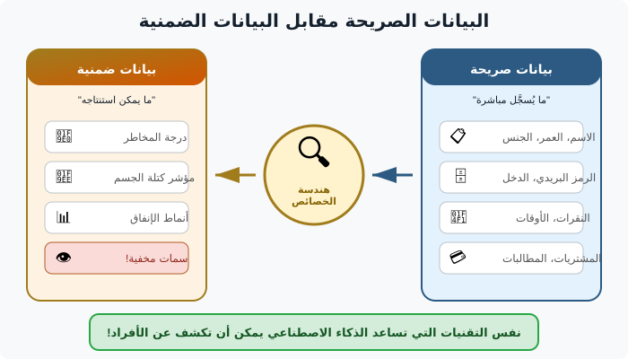
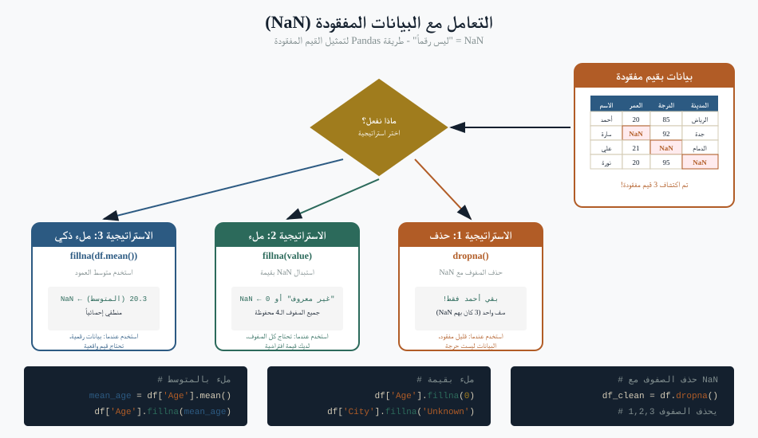
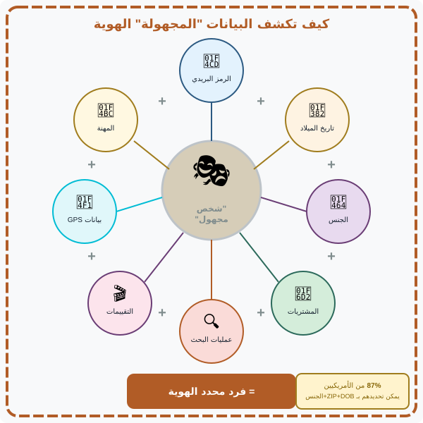
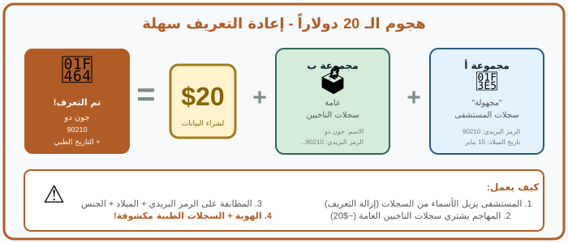

مستودع سارة
تُدير سارة مستودعًا. ذات صباح وصلت شحنة من 4,000 قطعة تحتاج إلى الفحص والتسمية والفرز. أحمد يعمل وحده يستغرق أربع ساعات. في اليوم التالي تُحضر سارة ثلاثة عمّال إضافيين لشحنةٍ بنفس الحجم. ينتهون في ساعة و15 دقيقة.
ليس ساعة واحدة بالضبط. لماذا؟ لأن بعض الوقت يُصرف على التنسيق — عاملٌ ينتظر المُسمِّي، آخر ينتهي مبكرًا فيُساعد جارَه الأبطأ. الفريق ليس أسرع من أحمد بأربع أضعاف؛ بل أسرع بنحو 3.2 أمثال سرعته. تلك الفجوة بين «المتوقّع» و«ما تحصل عليه فعلًا» هي من أهمّ الأرقام في بنية البيانات الضخمة.

هذه هي المعالجة المتوازية في جملة. لتسير أسرع، أضف عمّالًا. لكن التنسيق ليس مجّانيًا أبدًا، والفجوة بين التوازي المثالي والتوازي الواقعي هي حيث تعيش معظم نقاشات البنية التحتية فعلًا.
التوسّع الرأسي مقابل الأفقي
حين تحتاج إلى مزيد من القدرة، أمامك خياران. كلاهما يعمل. لهما تكلفة ومرونة وملف شراء مختلفان جدًا.

التوسّع الرأسي — ناطحة السحاب
آلة واحدة أكبر وأسرع. مزيد من المعالج والذاكرة والقرص. بسيطة في التشغيل. محدودة بأكبر آلة منفردة يمكن شراؤها. حين تتعطّل، يتعطّل كل شيء.
التوسّع الأفقي — الحرم
آلات أصغر كثيرة تعمل بالتوازي. أرخص لكل وحدة حوسبة. غير محدود عمليًا إن دعمتها برامجك. حين تتعطّل آلة، يستمرّ الباقي.
عمليًّا: حين يقترح فريق تقنية المعلومات «خادمًا واحدًا كبيرًا»، اسأل: ماذا يحدث حين يتعطّل؟ وحين يقترحون «عُنقودًا»، اسأل كيف يُقسَّم العمل وأيّ برنامج يُنسِّق العنقود. الإجابة الصحيحة تعتمد على عبء العمل، لكن لا ينبغي قبول «نحتاج إلى آلة أكبر فقط» دون نقاش حول المرونة.
CPU مقابل GPU
مطبخان. الأول فيه طاهية خبيرة تستطيع طهي أيّ شيء — ساشيمي، سوفليه، برياني — تطبخ تسلسليًا، طبقًا تلو طبق، وكلّ طبق ممتاز. الثاني خطّ تجميع فيه 200 عامل، كلٌّ يقوم بخطوة صغيرة (تقطيع البصل، التحضير، الزينة) على مئات الأطباق المتطابقة من المعكرونة. المطبخ الأول CPU. الثاني GPU.

الذكاء الاصطناعي الحديث — خصوصًا التعلّم العميق — هو في الغالب حسابات مصفوفات، نفس العملية الصغيرة تُكرَّر ملايين المرّات. تلك مشكلة طبق المعكرونة. تنفّذها وحدات GPU أسرع 100 مرّة من CPU. ولهذا تتحوّل كل محادثة بنية تحتية للذكاء الاصطناعي إلى محادثة GPU في النهاية. ولهذا أيضًا تكون GPU باهظة، نادرة، واعتبارًا أساسيًا في الشراء.
الخلاصة العملية
اسأل ما إذا كانت الأعباء التي يريد فريقك تشغيلها تحتاج فعلًا إلى GPU. تصنيف المستندات، الأنظمة المبنية على القواعد، وكثير من أدوات «الذكاء الاصطناعي» تعمل ممتازًا على CPU. GPU لتدريب النماذج الكبيرة وتشغيل الشبكات العصبية الكبيرة. لا تدفع ثمن خطّ تجميع لطبق واحد.
السيد-العامل ومحلية البيانات
حين يكون لديك عمّال كثيرون، يحتاج أحدٌ ما إلى تنسيقهم. النمط المهيمن هو السيد-العامل: عقدة واحدة تُسنِد المهام، يُنفّذها العمّال، وترجع النتائج.

المفهوم الآخر الذي يتردّد باستمرار في نقاشات البيانات الضخمة هو محلية البيانات. نقل البيانات عبر الشبكة بطيء ومكلف. الحوسبة سريعة. لذا القاعدة:
انقل الحوسبة إلى البيانات، لا البيانات إلى الحوسبة.
إن كان لديك عشرة تيرابايتات من السجلات في مركز بيانات معيّن وتريد تحليلها، فاشحن الكود الصغير إلى حيث تعيش البيانات ونفّذه هناك. لا تُنزِّل العشرة تيرابايتات إلى حاسوبك المحمول. يبدو هذا بديهيًا حتى تشاهد مشروعًا يتجاهله ثم يتساءل لماذا كل شيء بطيء ومكلف.

التحمّل ضد الأعطال
مع آلة واحدة، «الآلة تعمل» هي الحالة الوحيدة. مع ألف آلة، عدد منها معطّل في كل لحظة. أنظمة البيانات الضخمة مصمَّمة لتستمرّ حين تموت آلات منفردة. الآليات الثلاث المعتادة:
- التكرار. خزِّن كل قطعة بيانات على ثلاث آلات لا واحدة. إن ماتت إحداها، البيانات لا تزال على الأخريَين.
- إعادة التنفيذ. إن فشل عامل في منتصف مهمّة، يلاحظ السيد ويُعطي المهمّة نفسها لعامل سليم.
- نقاط التحقّق. الأعمال الطويلة تحفظ تقدّمها دوريًا حتى لا تبدأ من الصفر بعد الانهيار.
الخلاصة العملية
حين تُقيّم مقترحًا، اسأل: «ماذا يحدث إن فشلت إحدى هذه الآلات في المنتصف؟» المهندس الجيّد لديه إجابة قاطعة. الصمت المقلق يعني أن النظام لم يُصمَّم للفشل — بل للمسارات السعيدة فقط.
قصة المُحقّقة
تدخل مُحقّقة إلى غرفة معيشة. هناك كعكة عيد ميلاد نصف مأكولة، بالونات منكمشة، دراجة صغيرة مُسنَدة إلى الحائط، وبطاقة على الطاولة. لم يُخبرها أحد بأي شيء. خلال ثوان تستنتج: حدثت هنا مؤخّرًا حفلة عيد ميلاد لطفل، الطفل غالبًا في عمر 5–7 سنوات (دراجة صغيرة، كعكة بطابع كرتوني)، والحفلة انتهت (كعكة نصف مأكولة، بالونات منكمشة).
لم تطلب المحقّقة أيّ من تلك الحقائق. قرأتها من إشارات لم يهتم أحد بإخفائها. هذا بالضبط ما يفعله الذكاء الاصطناعي بالبيانات، وله انعكاسات عميقة على معنى «الخاص».
البيانات التي تحتفظ بها مؤسّستك مليئة بهذه الإشارات. كثير ممّا يبدو بياناتٍ وصفية حميدة هو، حين يُجمَع، كاشفٌ بعمق. سنرى في الأقسام القليلة التالية كم رخيصٌ وناجحٌ هذا النوع من الاستدلال.
هندسة الخصائص
قبل أن يتعلّم الذكاء الاصطناعي من بياناتك، يجب أن تتحوّل البيانات إلى خصائص — مدخلات رقمية أو فئوية يستطيع النموذج العمل عليها. تُسمّى هذه الخطوة هندسة الخصائص، وهي المكان الذي يعيش فيه معظم الذكاء الحقيقي في كثير من مشاريع تعلّم الآلة.
البيانات الصريحة مقابل الضمنية

- البيانات الصريحة ما يُسلِّمه المستخدمون عن قصد: النموذج المُعبَّأ، التقييم المُعطى، المربّع المُحدَّد. صادقة، منظّمة، لكنها محدودة.
- البيانات الضمنية ما يكشفونه دون قصد: كم بقي على صفحة، أي روابط لم ينقروا، متى سجّلوا الدخول. أغنى بكثير، لكنها أثقل أخلاقيًا.
ثلاث نكهات لهندسة الخصائص

- اليدوية. خبير المجال يقرّر ما يُحتسب. «أضف عمودًا لـ ‘الأيام منذ آخر شراء’ — نعرف أنه يتنبّأ بالخسارة».
- العلائقية. دمج حقول من جداول متعدّدة. «اربط سجلات العملاء بسجلات الطلبات واحسب الإنفاق على مدى العمر».
- الآلية. دع خوارزميةً تُولّد الخصائص وتحتفظ بالمفيد منها. قويّة، لكن الخصائص الناتجة قد يصعب شرحها لجهة تنظيمية.
التعويض القائم على الاستدلال

حين تكون البيانات مفقودة، يجب فعل شيء. الخيارات الأكثر أمانًا — حذف الصفّ، وضع علامة مفقود — صادقة لكنها تُقلّل حجم العيّنة. الخيار المُغرِي — استنتاج القيمة المفقودة من الأعمدة الأخرى — يحفظ العيّنة لكنه يُحوِّل البيانات إلى شيء لم يُلاحَظ فعلًا.
عمليًّا: حين «يعرف» نموذج شيئًا لم يُخبره العميل به أبدًا، يجب أن تعرف أيّ طريقة تعويض أنتجت هذه المعرفة. لا قاعدة ضدّ الاستدلال، لكن هناك قواعد ضدّ التظاهر بأنه لم يحدث.
محاسبة الخصوصية
طوال معظم العشرين سنة الماضية، نشرت المؤسّسات مجموعات بيانات «مُجهّلة» وافترضت أنها آمنة. كانوا مخطئين.
المعرّفات شبه المباشرة

الاسم معرّف واضح. الرمز البريدي ليس كذلك — آلاف يتشاركون فيه. تاريخ الميلاد ليس كذلك — آلاف يتشاركون فيه. الجنس ليس كذلك — نصف البلد يتشارك فيه. لكن تركيبة الرمز البريدي + تاريخ الميلاد + الجنس تُعرِّف بشكل فريد 87٪ من سكان الولايات المتحدة. هذه نتيجة لاتانيا سويني الكلاسيكية، وحطّمت افتراض الصناعة بأن إزالة الأسماء كافية.
أربع حكايات تحذيرية
1. الحاكم Weld
في منتصف التسعينيات، أصدرت ولاية ماساتشوستس سجلات مستشفى «مُجهّلة» لموظّفي الولاية. كان الحاكم ويليام وِلد بينهم. اشترت لاتانيا سويني قائمة الناخبين العامّة بـ20 دولارًا، وربطت المجموعتين على الرمز البريدي وتاريخ الميلاد والجنس، وأرسلت السجلات الطبية للحاكم إلى مكتبه. لم تخرق أيّ قانون. استخدمت بيانات عامّة فقط.
2. بيانات بحث AOL
عام 2006 أصدرت AOL 20 مليون استعلام بحث من 650 ألف مستخدم، مع استبدال الأسماء بأرقام معرّفة. خلال أيام تعرّف الصحفيون على مستخدمين بعينهم بقراءة سجلات بحثهم — استعلامات عن معالم بعينها وحالات طبية وأشخاص بعينهم. سحبت AOL البيانات؛ كان الضرر قد وقع.
3. جائزة Netflix
أصدرت Netflix 100 مليون تقييم أفلام بهويّات مستخدمين مُجهّلة لمسابقة دقّة تنبّؤ بمليون دولار. ربط الباحثون مع تقييمات IMDB العامّة وتعرّفوا على مشتركي Netflix بعينهم، بما في ذلك تفاصيل عن آرائهم السياسية والدينية مستنتجةً ممّا شاهدوا.
4. بيانات تاكسي نيويورك
أصدرت مدينة نيويورك سجلات رحلات تاكسي مُجهّلة. أرقام الميداليات عُولِجت بدالة تجزئة (هاش) — لكن بطريقة ضعيفة بما يكفي لتُعكَس في ساعات. ربط الباحثون تاكسيات بعينها بسائقين بعينهم، ورحلات بعينها بمشاهير معروفين رُؤوا يخرجون من نوادٍ بعينها.
النمط
في كل حالة آمنت المؤسّسة الناشرة بأنها أخفت هويّة البيانات. وفي كل حالة أُحبِط الإخفاء بدمج المجموعة مع مجموعة عامّة أخرى. الدرس ليس «كن أكثر حذرًا في الإخفاء». الدرس هو أن الإخفاء الحقيقي للهويّة أصعب بكثير ممّا يبدو، ويجب افتراض أن أيّ معرّف شبه مباشر يمكن ربطه ببيانات عامّة أخرى.
هجوم العشرين دولارًا
هجوم Weld احتاج إلى قائمة تسجيل ناخبين بـ20 دولارًا، عملية ربط قواعد بيانات، وعصر سبت. تلك هي نموذج التهديد الآن. ليس خصمًا على مستوى دولة — بل طالب جامعي بحاسوب محمول وبطاقة ائتمان.

الرقم 87٪ يستحقّ الإعادة: 87٪ من الأمريكيين مُعرَّفون بشكل فريد بالرمز البريدي + تاريخ الميلاد + الجنس وحدها. هذا الرقم للولايات المتحدة ومن التسعينيات. الرقم المكافئ في أيّ بلد ذي سجلات مدنية مفصّلة غالبًا أعلى اليوم لا أقلّ، لأن لدينا بيانات أكثر، لا أقلّ.
جرّب بنفسك
عرض هجوم إزالة الإخفاء يتيح لك أن تلعب دور المهاجم. تُسلَّم لك مجموعة سجلات طبية «خاصّة» وسجل عام، ويُطلب منك تعريف أفراد بعينهم. جرّبه قبل المتابعة. معظم الناس يُعرِّفون عدّة أشخاص خلال أقلّ من خمس دقائق.
وللنظير الرسمي، انظر أيضًا متتبّع ميزانية الخصوصية، الذي يُصوِّر الخصوصية التفاضلية — الإجابة الرسمية الحديثة على مشكلة إعادة التعريف.
تصنيف PDPL وNDMO
PDPL وNDMO يحوّلان مخاوف الخصوصية المجرّدة أعلاه إلى واجبات قانونية. لا تحتاج إلى حفظ كل بند، لكن عليك أن تعرف:
مستويات التصنيف الأربعة (NDMO)
| المستوى | المعنى | التضمين للذكاء الاصطناعي |
|---|---|---|
| عام | قابلة للمشاركة بحرّية؛ لن يضرّ نشرها. | أيّ أداة ذكاء اصطناعي مسموحة. مستضافة، محلية، في أي مكان. |
| داخلي | داخلية؛ نشرها يُسبّب ضررًا محدودًا. | الأدوات المستضافة مسموحة فقط مع اتفاقية تعامل صريحة؛ تُفضَّل داخل الإقليم. |
| سرّي | حسّاسة؛ نشرها يُسبّب ضررًا جسيمًا. | الأدوات المستضافة عادةً غير مسموحة. تُفضَّل النشر داخل المنشأة أو السحابة السيادية. |
| سرّي للغاية | أعلى حساسية؛ نشرها يُسبّب ضررًا استثنائيًا. | معزولة شبكيًا أو داخل المنشأة فقط. لا تُتاح لأيّ أداة ذكاء اصطناعي خارجية. |
ما يضيفه PDPL فوق ذلك
- السند القانوني. تحتاج إلى سند قانوني لمعالجة البيانات الشخصية — الموافقة، العقد، الالتزام القانوني، أو سند آخر مذكور.
- النقل عبر الحدود. قواعد صارمة على متى يجوز خروج البيانات الشخصية من المملكة، وأيّ ضمانات ترافقها.
- حقوق الأشخاص. للأفراد حقوق في الوصول والتصحيح و(في حالات محدّدة) المحو.
- إخطار الخرق. على المؤسّسات إخطار كلٍّ من الجهات التنظيمية والأشخاص المتأثّرين خلال أُطر زمنية محدّدة.
سؤال التصنيف الذي يجب أن يُجيب عنه كل مقترح ذكاء اصطناعي
قبل اعتماد أيّ نشر للذكاء الاصطناعي، اسأل: ما أعلى مستوى تصنيف للبيانات التي سيراها هذا النظام؟ الإجابة تُملي كل شيء آخر — أيّ الأدوات قانونية، أين يمكن استضافة النظام، من يمكنه الوصول، وأيّ مسار تدقيق تحتاج.
المستضاف مقابل المحلي
أبسط تأطير للسيادة على البيانات للذكاء الاصطناعي: إلى أين تذهب البيانات حين تستخدم الأداة؟ طرفان لمتّصلٍ واحد:
المستضاف (Claude.ai، ChatGPT، Gemini)
- الأسهل في الإعداد — سجِّل دخولك واستخدم.
- الأكثر قدرة — أكبر نماذج، أحدث ميزات.
- البيانات تخرج من البلد وتقع تحت ولاية قضائية أجنبية.
- قد تحتفظ سجلات البائع بالاستعلامات لفترة معلنة.
- مقبول للبيانات العامّة؛ أحيانًا للداخلية بموجب عقد؛ غير مقبول للسرّية أو السرّية للغاية.
المحلي / مفتوح المصدر (Qwen، DeepSeek، Llama)
- أصعب في الإعداد — يحتاج عتادًا، وعمليات تقنية، غالبًا خادم GPU.
- أقلّ قدرة لكل دولار — نماذج أصغر، مخرجات أبطأ.
- البيانات تبقى داخل المبنى تحت ولاية PDPL الكاملة.
- أنت تملك السجلات والوصول والاحتفاظ.
- الخيار الوحيد المقبول للبيانات السرّية والسرّية للغاية.
عرض حيّ (يقوده المدرّب)
سيُشغّل المدرّب نفس مهمّة اليوم 2 (فحص شذوذ CSV) على نموذج محلي مفتوح المصدر، معروضًا جنبًا إلى جنب مع النسخة المستضافة. النتيجة المحلية ستكون أبطأ بشكل واضح و أسوأ قليلًا. هذا التباين هو المغزى. للبيانات العامّة تفوز النسخة المستضافة؛ للبيانات السرّية النسخة المحلية هي الخيار الوحيد، حتى لو كلّفتك قدرة. القرار ليس أيّهما «أفضل» — بل أيّهما يناسب تصنيف بياناتك.
تهديدات أمنية خاصّة بالوكلاء
كلّ ما في هذه الوحدة حتى الآن — التصنيف، السيادة، المستضاف مقابل المحلي — كُتب لعصر المحادثة، حيث يردّ الذكاء الاصطناعي بنصّ، ويقرّر إنسان ما يفعله بذلك النصّ. تحوّل 2025–2026 نحو الوكلاء يضيف طبقة مخاطر لا يغطّيها الإطار التشغيليّ القديم: الوكلاء يفعلون. يفتحون ملفات، يُرسلون رسائل، يستدعون APIs، يُعدّلون سجلّات. الإجابة الخاطئة بثقة سيّئة. أمّا الفعل الخاطئ بثقة فأسوأ.
الأرقام (مطلع 2026)
- 88٪ من المؤسّسات أكّدت أو اشتبهت بحادثة أمنية متعلّقة بوكيل خلال السنة الماضية. قطاع الصحّة عند 92.7٪.
- 14.4٪ فقط من الوكلاء تصل الإنتاج بموافقة كاملة من إدارتَي الأمن وتقنية المعلومات. 80.9٪ من الفِرَق تجاوزت التخطيط إلى الاختبار أو الإنتاج رغم ذلك.
- أكثر من 50٪ من الوكلاء يعملون بلا إشراف ولا تسجيل البتّة — «الذكاء الاصطناعي الظلّ».
- 22٪ فقط من الفِرَق تُعامل الوكلاء كهويّات مستقلّة. الباقون يتشاركون مفاتيح API، ما يعني عدم وجود سجلّ يبيّن أيّ وكيل قام بأيّ فعل.
متّجهات التهديد الجديدة
أصدرت NSA ووكالات الأمن السيبرانيّ المتحالفة معها إرشادًا رسميًّا حول تأمين الذكاء الاصطناعي القائم على الوكلاء في مايو 2026. التهديدات عالية المستوى التي يُشير إليها:
- حقن المُطالَبات (Prompt injection). محتوى خبيث في مستند أو بريد أو صفحة ويب يأمر الوكيل بتجاهل تعليماته وفعل شيء آخر — تسريب بيانات، إرسال دفعة، حذف سجلّ. ولأن الوكيل يقرأ كلّ ما في سياقه على أنه تعليمات، فسطح الهجوم هائل.
- إساءة استخدام الأدوات. لدى الوكيل وصول لعشر أدوات. المهاجم يجعله يستخدم الخاطئة (يستخدم أداة قاعدة بيانات الإنتاج بينما المسموح فقط الاختبار).
- رفع الصلاحيات. وكيل متّصل بـ CRM و بريدك و نظام ملفّاتك. اختراق إحدى هذه الوصلات يمنح المهاجم وصولًا للثلاثة جميعًا.
- هجمات سلسلة التوريد. وكيلك يستخدم خادم MCP نشره طرف آخر. يدفع تحديثًا خبيثًا. يصبح وكيلك يُسرِّب البيانات إليه.
- الفشل المتسلسل. الوكيل أ يستدعي الوكيل ب الذي يستدعي الوكيل ج. خلل أو اختراق في ج يُؤثّر على كلّ من في الأعلى. الأنظمة متعدّدة الوكلاء تُضخِّم الإخفاقات النقطية.
الاحتواء مسؤولية القائد
الأنماط التقنية للدفاع ضدّ هذه التهديدات (وصول أدوات بأدنى صلاحية، عزل، تسجيل أفعال، مصادقة الوكيل-كهويّة) موجودة. سبب عدم تطبيق معظم المؤسّسات لها هو الحوكمة، لا التقنية. وظيفتك بصفتك قائدًا أن ترفض اعتماد نشر وكيل لا يتضمّنها — تمامًا كما ترفض نشر قاعدة بيانات بلا نسخ احتياطية.
أسئلة الشراء الواجب طرحها
أكثر شيء فائدة ستغادر به اليوم: قائمة أسئلة لطرحها على كل من يقترح نظام ذكاء اصطناعي سيلامس بياناتك. اطبع هذه القائمة. ضعها على مكتبك. الأسئلة العشرة الأولى تنطبق على أيّ نشر ذكاء اصطناعي؛ والخمسة الأخيرة خاصّة بالوكلاء وأهمّ في 2026.
- إلى أين تذهب البيانات فيزيائيًا؟ البلد، المنطقة، مراكز البيانات المحدّدة إن أمكن.
- من يصل إلى السجلات؟ موظّفو البائع؟ متعاقدوه من الباطن؟ أيّ ولاية قضائية تحكمهم؟
- ما سياسة الاحتفاظ؟ كم تُحفظ المدخلات؟ هل تُستخدم لتدريب نماذج مستقبلية؟
- هل يستطيع هذا العمل داخل المنشأة؟ إن نعم، فما الذي يتغيّر في التكلفة والأداء؟
- ما فرق التكلفة بين المستضاف وداخل المنشأة؟ تكلفة التشغيل السنوية، لا الترخيص فقط.
- ما أعلى تصنيف بيانات يستطيع هذا النظام معالجته قانونيًا؟ اطلب من البائع التزامًا كتابيًا.
- ما عملية إخطار الخرق؟ من يُبلِّغ من، ومتى، وبأيّ شكل؟
- إن احتجنا إلى إزالة بيانات مستخدم غدًا، كيف؟ PDPL يمنح الأشخاص حقوقًا؛ على النظام أن يُلبّيها.
- ماذا يحدث لبياناتنا إن ألغينا؟ تُعاد؟ تُحذف؟ تُحفظ؟
- من يستخدم هذا النشر بعينه أيضًا؟ هل نتشارك بنية تحتية مع طرف لا نريد؟
البائع الذي يستطيع الإجابة عن العشرة بسرعة وكتابةً يمكنك على الأرجح الوثوق به. البائع الذي يرتبك في السؤال 3 أو 8 يُخبرك بشيء مهمّ.
خمسة أسئلة إضافية إن كان المقترح وكيلًا (لا محادثة)
- هل يستخدم MCP، أم تكامل مخصَّص؟ راجع اليوم 2 — MCP صار التوقّع الافتراضي للقابلية للتبديل والتدقيق.
- ما مستوى الاستقلاليّة الذي سيعمل به؟ اقتراح فقط؟ موافقة على كل فعل؟ مستقلّ بحدود؟ مستقلّ كلّيًّا؟ القرار قرارك أنت، لا قرار البائع.
- كيف يُصادق على أنظمتنا؟ هل لديه هويّة خاصّة، أم يستعير اعتمادات مستخدم بشريّ؟ الاعتمادات المستعارة تجعل التدقيق مستحيلًا.
- ماذا يُسجَّل لكل فعل؟ تحديدًا: أيّ أداة استُدعيت، بأيّ وسائط، من أيّ وكيل، نيابةً عن من، وماذا عاد. إن كان الجواب «نُسجّل الطلبات» فقط، لن يصمد سجلّ التدقيق أمام مراجعة حادثة.
- ما زرّ الإيقاف؟ إن اكتشفنا أن الوكيل يسيء التصرّف الساعة 3 فجرًا، من يُوقفه، خلال أيّ زمن، دون كسر أنظمة هو في منتصف فعل عليها؟
خلاصة اليوم
- المعالجة المتوازية حقيقية لكنها ليست مثالية أبدًا. التنسيق يُكلِّف دائمًا شيئًا.
- التوسّع الأفقي (آلات صغيرة كثيرة) عادةً يتفوّق على التوسّع الرأسي (آلة كبيرة واحدة) في المرونة والتكلفة — إن دعمته برامجك.
- GPU هي الأداة الصحيحة لأعباء تعلّم الآلة المُكثّفة بالمصفوفات، والخاطئة لكل ما عداها. لا تدفع ثمنها بحكم العادة.
- انقل الحوسبة إلى البيانات، لا البيانات إلى الحوسبة.
- إخفاء الهويّة بإزالة الأسماء ليس إخفاءً. المعرّفات شبه المباشرة تتسرّب. افترض أن هجوم العشرين دولارًا يعمل ضدّ أيّ مجموعة بيانات تنشرها.
- 87٪ من الناس مُعرَّفون بشكل فريد بـ الرمز البريدي + تاريخ الميلاد + الجنس. عامل هذه التركيبة كمعرِّف شخصي.
- وافِق طبقة أداتك مع مستوى تصنيف بياناتك بموجب PDPL/NDMO. عام ← أيّ أداة. سرّي ← داخل المنشأة فقط.
- الذكاء الاصطناعي المستضاف أكثر قدرة لكنه يعيش في ولاية قضائية أخرى. المحلي سيادي لكنه أضعف اليوم. المفاضلة قرار القائد.
- قائمة أسئلة الشراء أعلاه قصيرة وواضحة وتنفع. استخدمها.
- الوكلاء يُضيفون متّجهات تهديد جديدة — حقن المُطالَبات، إساءة استخدام الأدوات، هجمات سلسلة التوريد، الفشل المتسلسل — و88٪ من المؤسّسات قد عاشت حوادث بالفعل. الحلّ حوكمة (أدوات بأدنى صلاحية، الوكيل-كهويّة، سجلّات أفعال، أزرار إيقاف)، لا «مُطالَبات أذكى».